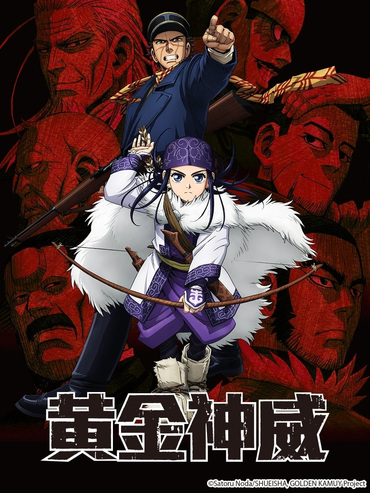

AnimeInterester
黃金神威

故事簡介
被稱為「不死的杉元」、在日俄戰爭中殺敵無數的杉元佐一，為了籌錢完成戰友生前的請託，來到昔日淘金熱潮盛行的北海道，並結識了阿伊努人少女─阿席莉帕。為了探尋父親於金塊搶案中身亡的真相，阿席莉帕同意與杉元共同行動，杉元負責戰鬥，阿席莉帕則負責追蹤與野外求生，這個特別的二人組就此踏上追尋黃金的險惡之旅。
製作人員
原作：野田サトル
導演：難波日登志
副導演：川越崇弘
系列構成：高木登
角色設計：大貫健一
主要動畫師：羽山淳一
銃火器設定：渡辺浩二
道具設計：浅沼信也
動物設定：墨佳遼
美術監督：森川篤
色彩設計：茂木孝浩
攝影監督：戸澤雄一朗
CG導演：奥村優子 / 濱田康平
剪輯：定松剛
音響監督：明田川仁
音響制作：マジックカプセル
アイヌ語監修：中川裕
音樂：末廣健一郎
製作：ゴールデンカムイ製作委員会
聲優名單
杉元佐一：小林親弘
阿席莉帕：白石晴香
白石由竹：伊藤健太郎
鶴見中尉：大塚芳忠
土方歳三：中田譲治
尾形百之助：津田健次郎
谷垣源次郎：細谷佳正
牛山辰馬：乃村健次
永倉新八：菅生隆之
各集標題
| 話數 | 標題 |
|---|---|
| 1 | 瘟卡姆伊 |
| 2 | 野篦坊 |
| 3 | 卡姆伊摩西利 |
| 4 | 死神 |
| 5 | 奔馳 |
| 6 | 獵師之魂 |
| 7 | 錯綜 |
| 8 | 殺人鬼的眼神 |
| 9 | 閃耀 |
| 10 | 同行者 |
| 11 | 殺人旅館全員集合 |
| 12 | 騙人的狐狸 |